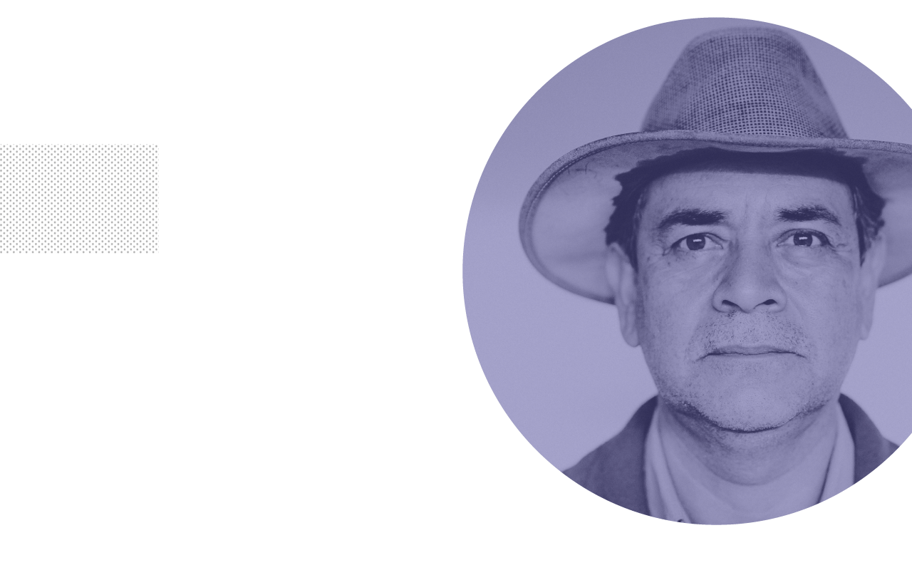

EN
ESP

HOME
STORIES
SYMPTOMS
HELP CENTERS
MEET
SEBASTIAN
connect
I am Sabastian, a 40-year-old migrant farm worker based in Madera, California, the heart of the fertile Central Valley. I’m also a single mother of three: my 20-year-old eldest son came and joined me in 2004, crossing with a coyote. My son is now at the university, studying political science. The younger two were born here — American citizens.
I grew up in Santiago Yosondua, Oaxaca, in southern Mexico. I went to school through third grade, my dad was killed when I was 11, and we didn’t even have enough food to eat. So I went off to work at 12 in Mexico City as a live-in maid for a Spanish family. I’d go back each year to Oaxaca to visit my mom, and the migrants who’d come back from the United States would buy fancy cars and nice houses, while my mom still slept on a mat on the floor in our hut. A coyote told me he could take me to the United States for $1,800. So I went north in 1999, leaving my four-year-old son behind with my mother. I was 26.
We crossed through the desert into Arizona, hiding from the border patrol. I finally arrived in Madera in March of 1999, and I moved into a boarding house for migrant farmworkers.
I’d never worked in a field. It was really hard at first — working outdoors with the heat, the daily routine. But I’ve certainly learned. In a typical year, I prune grapevines starting in April, and pick cherries around Madera in May. I travel to Oregon in June to pick strawberries, blueberries and blackberries on a farm owned by Russians. I take my 14-year-old daughter and 8-year-old son with me while they’re on their summer break. They play with the other kids, and bring me water and food in the field. We’ll live in a boarding house with 25 rooms for some 100 people, and everyone lines up to use the bathrooms. My kids and I share a room for $270 a month.
I head back to Madera in August for my children to start school. We own our house now — paid off in April! I reached the American dream — ha — thanks to the help of the father of my youngest son, who died in 2007 after he returned to Mexico after a problem with immigration authorities and was killed while working as a policeman. In Madera, I pick grapes that will be made into raisins in September, usually rest in October. In November, I travel each day to Stanislaus County to work planting trees in a nursery until February.
On all the harvests, men and women work side-by-side doing the same job, and women work just as fast as the men. I’ve been harassed one time: when a boss who drove us out to the field every day wanted to hug me, and said he wouldn’t charge me the $8 a day for the ride if I’d go out with him. (Most of us don’t have driver’s licenses, so the contractors organize rides to work.) I left the job. In California, especially in Fresno and Madera counties, there’s an abundance of farm jobs. So you don’t have to do one you don’t like.I’ve seen on the news that some Congress members or American citizens say undocumented workers are taking their jobs. We’re not taking their jobs. In the 14 years I’ve been here, I’ve never seen an American working in the fields. I’ve never seen anyone work like Mexicans. In restaurants and construction, you’ll find Salvadorans and Guatemalans, but in the fields, it’s almost all Mexicans.
The work is hard — but many jobs are hard. The thing that bothers me more is the low pay. With cherries, you earn $7 for each box, and I’ll fill 30 boxes in a day — about $210 a day. For blueberries, I’ll do 25 containers for up to $5 each one — $125 a day. With grapes, you make 30 cents for each carton, and I can do 400 cartons a day – $120 a day. Tomatoes are the worst paid: I’ll pick 100 for 62 cents a bucket, or about $62 a day. I don’t do tomatoes much anymore. It’s heavy work, you have to bend over, run to turn in your baskets, and your back hurts. I say I like tomatoes — in a salad. Ha. With a lot of the crops, the bosses keep track of your haul by giving you a card, and punching it every time you turn in a basket.
“
One time, a contractor who was an American citizen with Mexican parents called me a no-good illegal, and claimed he was going to call immigration on me. I said, “Send ‘em over, I’ll be waiting!” I left that job.
I wish they would be more considerate of what we’re doing with the pay rate. They’re a little cheap: 31 cents for a carton of grapes. I would like another two or three cents a carton, because it’s really hard and heavy work. I’ve never worked a union contract job — a lot of them are in tomatoes or oranges — but if anyone doesn’t want to pay you, the United Farm Workers of America where I’m a volunteer, will help you get paid.
I’m very fast. In jobs where you’re doing delicate things, like pruning plants, they don’t want you rushing, so they pay you by the hour. But harvest jobs are usually paid by the quantity you pick. I prefer it that way — you have to run, but you can get home faster. We get there at 6:00 in the morning and, if I rush, I take a break at 1:00, drink and eat something, then work for another hour and head home. You pick the amount of hours you want to work, and you try not to take a lot of breaks so you can earn more. Some people will go until 5:00 in the afternoon and want to work and work, but I have my kids.
You come home really tired. I’ll come home, take a shower, put lotion on my hot feet, and be ready for the next day. I’m usually in bed by 9:00 to get up at 3:00 or 4:00 in the morning to make and pack some tacos for the day. Also, undocumented workers don’t have any medical insurance — so the majority of us just buy over-the-counter pills for any problems. Luckily, I haven’t had many health issues yet.
Some contractors think they can abuse you because you’re undocumented. One time, a contractor who was an American citizen with Mexican parents called me a no-good illegal, and claimed he was going to call immigration on me. I said, “Send ‘em over, I’ll be waiting!” I left that job.
I’m going to keep working as long as I can. My youngest son says he’s going to invent a robot to do the housework for me, and he’s going to earn a lot so we can buy our own ranch.
And yes, you can use my real name! Some undocumented people are scared, but I’ve never seen an immigration raid on a farm. (I hope they don’t start, either.) Agriculture is dependent on undocumented workers. We need the money from the farmers, and the farmers need our hands.